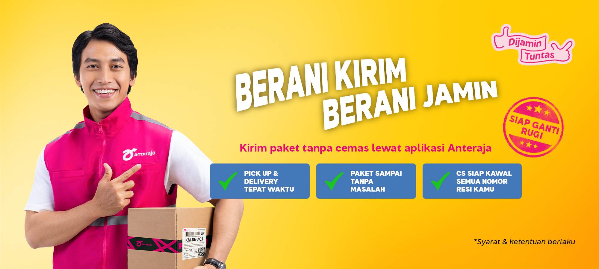

Pick Up Sesuai Jadwal
Dijemput sesuai slot jadwal yang dipilih pelanggan
Refund ongkir via RefundAja jika pick up tidak sesuai jadwal.
Berlaku untuk: Seluruh layanan melalui Aplikasi Anteraja
Syarat dan Ketentuan Jaminan Pick Up →
#DijaminTuntas
Kirim paket lebih tenang dengan jaminan layanan Anteraja
Periode Program: 14 September - 29 Desember 2026
Temukan informasi yang Anda butuhkan mengenai program #DijaminTuntas.
#DijaminTuntas merupakan bentuk komitmen Anteraja dalam memberikan kepastian layanan bagi pelanggan.
Program berlaku 14 September hingga 29 Desember 2026 untuk seluruh layanan Anteraja di 20 kota. Refund ongkir berlaku untuk pengiriman yang dipesan melalui Aplikasi Anteraja, sedangkan penanganan kendala berlaku untuk semua pengiriman yang dilaporkan lewat kanal resmi kami.
Isi Program
Perlindungan layanan dari proses pick up, pengiriman, hingga penyelesaian kendala.
Dijemput sesuai slot jadwal yang dipilih pelanggan
Refund ongkir via RefundAja jika pick up tidak sesuai jadwal.
Berlaku untuk: Seluruh layanan melalui Aplikasi Anteraja
Syarat dan Ketentuan Jaminan Pick Up →Sampai sesuai estimasi waktu pengiriman yang muncul saat order
Refund ongkir jika melewati estimasi. Paket tanpa asuransi yang hilang atau rusak dapat memperoleh kompensasi hingga Rp1.500.000 sesuai ketentuan.
Berlaku untuk: Seluruh layanan melalui Aplikasi Anteraja
Syarat dan Ketentuan Jaminan Pengiriman →Ada kendala? Kami bantu sampai tuntas!
Kompensasi diberikan per customer per order jika penyelesaian melebihi batas waktu.
Berlaku untuk: Semua pengiriman yang dilaporkan lewat kanal resmi. Waktu penanganan: 48 jam (Senin-Jumat) / 72 jam (Sabtu-Minggu dan hari libur nasional). Berlaku di: 20 kota cakupan program
Syarat dan Ketentuan Jaminan Penyelesaian Kendala →Yang Membedakan
Untuk keterlambatan pick up dan pengiriman, Anda tidak perlu mengajukan refund.
Cakupan
Tunggu informasi lebih lanjut untuk area lainnya, ya!
Batasan
Jaminan #DijaminTuntas tidak berlaku untuk kondisi berikut.
Refund ongkir untuk order di luar Aplikasi Anteraja — website, agen, marketplace, aggregator, dan korporat. Penyelesaian kendala tetap berlaku.
Pengiriman dari atau ke kota di luar 20 kota cakupan program.
Keterlambatan atau keadaan kahar (force majeure) dan kondisi di luar kendali Anteraja.
Alamat tidak lengkap atau penerima tidak dapat ditemui/dihubungi.
Barang yang dilarang dikirim sesuai ketentuan Anteraja dan hukum yang berlaku.
Alur
Proses penanganan dilakukan secara terstruktur melalui verifikasi sistem Anteraja.
Diverifikasi sistem
Refund diproses
Masuk ke RefundAja
Diverifikasi sistem
Refund diproses
Masuk ke RefundAja
Ajukan laporan
Diverifikasi tim
Klaim diproses
Kompensasi diterima
Laporan diverifikasi
Penentuan kelayakan
Voucher diberikan
FAQ
14 September - 29 Desember 2026.
Tidak. Jaminan berlaku otomatis untuk setiap order yang memenuhi ketentuan program.
Seluruh layanan Anteraja. Refund ongkir berlaku untuk pengiriman yang dipesan melalui Aplikasi Anteraja, sedangkan penanganan kendala berlaku untuk semua pengiriman.
Untuk refund ongkir, belum — bagian itu berlaku untuk pesanan dari Aplikasi Anteraja. Kendalamu tetap ditangani dalam batas waktu yang kami janjikan, selama dilaporkan lewat kanal resmi Anteraja.
Tidak. Semua pengiriman Anteraja di 20 kota cakupan program ditangani dalam batas waktu yang kami janjikan, selama dilaporkan lewat kanal resmi.
Belum. Saat ini program mencakup 20 kota. Tunggu informasi lebih lanjut untuk area lainnya, ya!
Laporkan melalui kanal resmi Anteraja. Kompensasi diproses apabila memenuhi ketentuan program.
Call Center, email, Live Chat di Aplikasi Anteraja, dan X/Twitter @AnterajaCare. Khusus pesanan yang dibuat lewat Aplikasi Anteraja, laporan dari jalur lain — misalnya direct message media sosial — tetap dijamin ditangani dalam batas waktu yang kami janjikan.
Tidak. Refund diproses setelah verifikasi sistem dan pelanggan dinyatakan memenuhi syarat program.
Maksimal 7 hari kerja setelah pengajuan cash out RefundAja.
Ya, sesuai ketentuan yang berlaku, dengan kompensasi maksimal hingga Rp1.500.000.
Tidak. Aktivitas berhadiah dan jaminan layanan merupakan dua hal terpisah.
Tidak. Jaminan tidak berlaku untuk keadaan kahar atau kondisi di luar kendali Anteraja.
Di Aplikasi Anteraja
Tim kami siap membantu sesuai jam operasional yang berlaku.
Dapatkan Jaminannya!
Unduh aplikasi Anteraja dan nikmati manfaat program #DijaminTuntas!